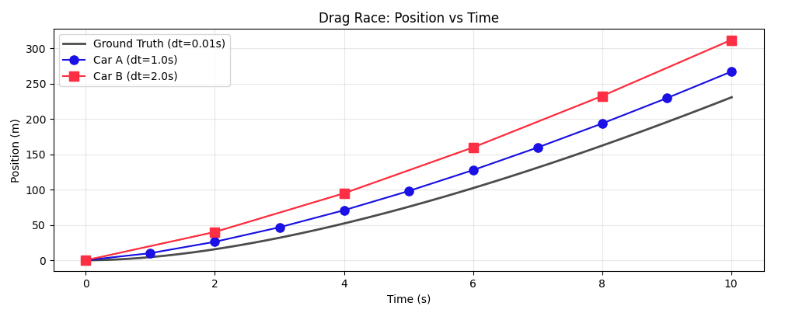
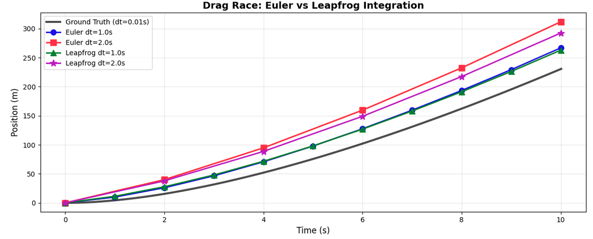

Bevy Systems: Gravity
I haven't had a lot of free time lately, but my desire to start a million projects I'll never finish has in no way diminished. I've been thinking about these projects during car rides, birthday parties, and those 3am wake-ups where I suddenly realize a better way to do something I haven't touched in 5 years.
After watching Make Systems Not Games, I decided to focus on building modular, reusable systems instead of complete game prototypes. This is one of those systems. It was quick to build. But only because I'd failed at it enough times before to know what problems I needed to solve. (And because Claude handled the easy parts, plus some hard parts with coaching.)
What This Is
This is an n-body gravity simulator for Bevy. Not the gravity you'd find in a physics engine like Rapier, but the kind you'd find in Kerbal Space Program or Universe Sandbox. The kind where you fly a spaceship around planets and have to reason about orbital mechanics and delta-v budgets like some kind of masochist who enjoys pain (or has a degree in aerospace engineering, or just played a lot of KSP).
This post walks through three key challenges I had to solve:
- Scale and Units: How do you simulate both planetary orbits and surface-level physics without floating-point errors destroying everything?
- Integration Accuracy: How do you keep orbits stable over thousands of simulation steps without them decaying into chaos?
- Time Acceleration: How do you speed up time 1000x without breaking the physics?
There are limitations to doing this in realtime. Some of which I could fix with CUDA, but that would turn a 4-day project into a 4-week project. What's here is "Good Enough" for the scale I'm considering.
Let's dive in.
Challenge 1: Scale and Units
The first problem with gravity simulations is scale. You might want to simulate:
- Surface-level physics (meters and kilograms)
- Planetary systems (thousands of kilometers, Earth masses)
- Solar systems (astronomical units, solar masses)
If you use real-world values directly, you'll end up with floating-point precision errors and numbers like 1.989e30 scattered throughout your code. The solution is a configurable unit system that lets you define what "1 unit" means in your simulation:
#[derive(Debug, Clone, Resource)]
pub struct GravityConfig {
/// Length scale defining how real-world distances map to game coordinates.
///
/// Examples:
/// - `Length::from_meters(1.0)`: 1 Bevy unit = 1 meter (surface scale)
/// - `Length::from_kilometers(1.0)`: 1 Bevy unit = 1 km (regional scale)
/// - `Length::from_au(0.01)`: 1 Bevy unit = 0.01 AU (solar system scale)
pub length_scale: Length,
/// Mass scale allowing scaling masses to avoid very large/small numbers.
///
/// Examples:
/// - `Mass::from_kg(1.0)`: Mass values represent kilograms directly
/// - `Mass::earth()`: Mass values represent Earth masses
/// - `Mass::from_kg(1.989e30)`: Mass values represent Solar masses
pub mass_scale: Mass,
}
impl GravityConfig {
/// Configuration optimized for solar system simulations.
pub fn solar_system() -> Self {
Self {
length_scale: Length::from_au(0.01), // 0.01 AU per unit
mass_scale: Mass::earth(), // Earth masses
}
}
/// Configuration optimized for planetary system simulations (Earth-Moon scale).
pub fn planetary() -> Self {
Self {
length_scale: Length::from_kilometers(1000.0), // 1000 km per unit
mass_scale: Mass::earth(), // Earth masses
}
}
/// Configuration optimized for atmospheric and near-surface operations.
pub fn atmospheric() -> Self {
Self {
length_scale: Length::from_kilometers(1.0), // 1 km per unit
mass_scale: Mass::earth(), // Earth masses
}
}
/// Configuration optimized for surface operations and small-scale physics.
pub fn surface() -> Self {
Self {
length_scale: Length::from_meters(1.0), // 1 meter per unit
mass_scale: Mass::from_kg(1.0), // 1 kg per unit
}
}
/// Get the effective gravitational constant for this scale configuration.
///
/// The gravitational constant is scaled according to the unit conversions:
/// G_effective = G_real * (mass_scale) / (length_scale³)
pub fn gravitational_constant(&self) -> f32 {
const G_SI: f32 = 6.674e-11; // m³/(kg⋅s²)
// Scale conversions for space and mass units
G_SI * self.mass_scale.kg() / self.length_scale.meters().powi(3)
}
/// Convert a real-world distance (in meters) to Bevy units.
pub fn meters_to_units(&self, meters: f32) -> f32 {
meters / self.length_scale.meters()
}
/// Convert Bevy units to real-world distance (in meters).
pub fn units_to_meters(&self, units: f32) -> f32 {
units * self.length_scale.meters()
}
/// Convert a real-world mass (in kg) to simulation mass units.
pub fn kg_to_mass_units(&self, kg: f32) -> f32 {
kg / self.mass_scale.kg()
}
/// Convert simulation mass units to real-world mass (in kg).
pub fn mass_units_to_kg(&self, mass_units: f32) -> f32 {
mass_units * self.mass_scale.kg()
}
}
This was the missing piece in my previous failed attempts. Different games need different scales; a full-scale solar system simulation with 1:1 timescale would be incredibly boring. This config lets you tune the simulation while preserving physical accuracy.
I also wanted type-safe units throughout the simulation. The challenge is that Bevy's reflection system needs to understand these values. UOM's units don't implement Reflect, so I created wrapper components that convert between type-safe units and Bevy's internal representation.
Components
With the scale system in place, entities need three things:
#[derive(Reflect, Component, Default)]
#[reflect(Component)]
pub struct CelestialBody {
pub velocity: Vec3,
}
/// Marker component for bodies that should remain fixed in position.
/// Pinned bodies are immune to gravitational forces but still exert gravitational influence on other bodies.
#[derive(Reflect, Component, Default)]
#[reflect(Component)]
pub struct Pinned;
/// Mass component with type-safe units that supports Bevy reflection.
///
/// This wraps the UOM Mass type to provide compile-time unit safety while
/// maintaining compatibility with Bevy's reflection system.
#[derive(Component, Reflect, Clone, Debug)]
#[reflect(Component)]
pub struct Mass {
/// Raw mass value in kilograms (for reflection/serialization)
pub kilograms: f32,
/// Type-safe mass quantity (ignored by reflection to avoid UOM issues)
#[reflect(ignore)]
#[allow(dead_code)]
inner: uom::si::f32::Mass,
}
Entities need a CelestialBody component to participate in gravity, a Mass to know how much gravitational influence they have, and optionally Pinned if they should stay fixed (like a sun that doesn't move but still pulls on planets).
Challenge 2: Integration Accuracy
Now for the tricky part: actually simulating orbits over time. The basic gravity calculation is straightforward:
fn calculate_velocity_impact(
our_transform: &GlobalTransform,
our_mass: &Mass,
other_transform: &GlobalTransform,
other_mass: &Mass,
time_step_secs: f32,
) -> Vec3 {
let our_body_transform = our_transform.translation();
let other_body_transform = other_transform.translation();
let distance = our_body_transform.distance(other_body_transform);
let direction = (other_body_transform - our_body_transform).normalize();
let force_magnitude = GRAVITY * (our_mass.mass * other_mass.mass) / distance.powi(2);
let force = direction * force_magnitude;
let acceleration = force / our_mass.mass;
acceleration * time_step_secs
}
Then you need a system to move the object based on its velocity:
fn update_position(
mut bodies: Query<(&CelestialBody, &mut Transform)>,
time: Res<Time>,
) {
for (body, mut transform) in &mut bodies {
transform.translation -= body.velocity * time.delta_seconds();
}
}
And this works. This would be the most naive way to do integration, known as Euler. Specifically Symplectic Euler (because we are figuring out our velocity, then applying it instead of the other way around). You will see objects orbit each other, but eventually all your orbits will degrade. We can figure this out by calculating the total energy (potential + kinetic) of the orbital system and plotting it over time. And the greater the time step, (how much time delta elapsed between each update) the worse the drift gets.
To understand why timestep size matters so much with integration, let's use a simpler analogy.
Imagine simulating a car. And lets say you have a system where you only update the velocity every second. Cars initially accelerate very fast, but their acceleration slows down as air resistance, gearing limitations, and power vs force relationship come into play. Now lets imagine you have two cars and you are going to have a drag race. Each car has the same acceleration curve, but one car's velocity will update every second, and the second car's velocity will update every two seconds. Which car will win? The second car, by a pretty non-trivial amount1:
And this is probably intuitive. The car that is calculating its velocity every 2 seconds is accelerating faster for longer. The calculations for its current acceleration aren't wrong, they just aren't happening in realtime.
But, we can make our approximation a bit better. Lets try out a different integration strategy, known as leapfrog2:
It doesn't completely solve this whole time step and integration accuracy issue. It is a bit more accurate though. And it does entirely solve some other problems.
The main benefit of leapfrog in the context of Gravitational approximations is that the integration errors don't accumulate like they do with Euler. You can see this on the graph by comparing Euler at dt=1s (blue dot) to Leapfrog at dt=1s. Even though they should be more or less identical, the Leapfrog integration is more conservative. You can see this more at dt=2s. And this effect would be greatly exaggerated at time steps that are an order of magnitude above that. It would also get worse the more steps you simulate.
Another benefit: Leapfrog is reversible. Negate time and apply the same steps in reverse, and you'll get right back to where you started. This would be important if I were insane enough to implement this in a multiplayer game with rollback netcode. (I'm not, don't worry.)
Implementing Leapfrog for Gravity
Leapfrog integration works in two phases:
- Kick: Update velocities using current positions:
v(t+dt/2) = v(t-dt/2) + a(t) * dt - Drift: Update positions using new velocities:
x(t+dt) = x(t) + v(t+dt/2) * dt
The key is that positions and velocities are evaluated at staggered time points: positions at integer timesteps, velocities at half-timesteps. This leapfrogging is why it can conserve energy on average.
The implementation is quite involved (took me a while to get the math right, and I'm still not 100% sure there aren't bugs). The high-level flow:
- Snapshot positions - Capture all body positions at time
tfor consistent force calculations - Initialize on first run - Bootstrap velocities to half-timestep:
v(-dt/2) = v(0) - a(0) * dt/2 - Kick phase - Update all velocities from
v(t-dt/2)tov(t+dt/2)using forces atx(t) - Drift phase - Update all positions from
x(t)tox(t+dt)using new velocities
The tricky part is the initialization step: Leapfrog needs velocities at half-timesteps, so on the first frame we do a half-step backwards to get v(-dt/2) from the initial v(0).
/// Trait for integration methods
pub trait Integrator {
/// Perform a single integration step
fn integrate_step(
&self,
bodies: &mut Query<(Entity, &mut CelestialBody, &mut Transform, &GlobalTransform)>,
masses: &Query<(Entity, &Mass, &GlobalTransform)>,
pinned_bodies: &Query<Entity, With<Pinned>>,
config: &GravityConfig,
dt: f32,
);
}
impl Integrator for Leapfrog {
fn integrate_step(
&self,
bodies: &mut Query<(Entity, &mut CelestialBody, &mut Transform, &GlobalTransform)>,
masses: &Query<(Entity, &Mass, &GlobalTransform)>,
pinned_bodies: &Query<Entity, With<Pinned>>,
config: &GravityConfig,
dt: f32,
) {
// ═══════════════════════════════════════════════════════════════════════════════
// LEAPFROG INTEGRATION ALGORITHM
// ═══════════════════════════════════════════════════════════════════════════════
//
// The Leapfrog integrator is a second-order symplectic integration method that
// preserves phase space volume and conserves energy over long time periods.
// Unlike Euler or RK4, it maintains time-reversibility and stability.
//
// Position and velocity are evaluated at staggered time points:
// - Positions x are evaluated at integer timesteps: t, t+dt, t+2dt, ...
// - Velocities v are evaluated at half-timesteps: t-dt/2, t+dt/2, t+3dt/2, ...
//
// This "leapfrogging" of position and velocity gives the method its name and
// its superior energy conservation properties.
//
// ALGORITHM (Kick-Drift form):
// 1. KICK: v(t+dt/2) = v(t-dt/2) + a(t) * dt
// 2. DRIFT: x(t+dt) = x(t) + v(t+dt/2) * dt
//
// Where:
// - a(t) is acceleration computed from gravitational forces at position x(t)
// - The "kick" updates velocity using the full timestep dt
// - The "drift" updates position using the newly updated velocity
//
// ═══════════════════════════════════════════════════════════════════════════════
// ───────────────────────────────────────────────────────────────────────────────
// STEP 0: SNAPSHOT CURRENT POSITIONS
// ───────────────────────────────────────────────────────────────────────────────
//
// We need to compute accelerations at time t using positions x(t).
// During the kick phase, we'll be mutably iterating over bodies to update
// velocities.
//
// This ensures all bodies use consistent, simultaneous positions when computing
// gravitational forces, preventing inconsistencies in the force calculation.
//
let body_positions: Vec<(Entity, Vec3)> = bodies
.iter()
.map(|(entity, _, transform, _)| (entity, transform.translation))
.collect();
// ───────────────────────────────────────────────────────────────────────────────
// INITIALIZATION PHASE (First Call Only)
// ───────────────────────────────────────────────────────────────────────────────
//
// When the simulation starts, we have:
// - Positions at time t=0: x(0)
// - Velocities at time t=0: v(0)
//
// Leapfrog requires velocities at half-timesteps. Specifically, to start
// the first full integration step, we need v(-dt/2) not v(0).
//
// So, On the very first call, we apply a "half-step backwards kick" to convert
// v(0) into v(-dt/2). This initialization ensures the staggered time grid
// is properly established.
//
// After initialization:
// - Positions remain at x(0)
// - Velocities are now at v(-dt/2)
// - Future steps will maintain this half-timestep offset
//
// We return immediately after initialization to avoid doing a full integration
// step in the same call. This ensures the user sees the correct initial state
// and the first full step happens on the next call to integrate_step().
//
// SAFETY: We access mutable static LEAPFROG_FIRST_RUN to track initialization state.
// This is safe because Bevy's schedule runs systems sequentially in a single thread,
// ensuring no concurrent access. The flag is only modified here and in reset_integrator_state().
//
unsafe {
if LEAPFROG_FIRST_RUN {
// ─────────────────────────────────────────────────────────────────────
// INITIALIZATION LOOP: Compute v(-dt/2) from v(0)
// ─────────────────────────────────────────────────────────────────────
for (entity, mut body, _transform, _global_transform) in bodies.iter_mut() {
// Pinned bodies never move; enforce zero velocity
if pinned_bodies.contains(entity) {
body.velocity = Vec3::ZERO;
continue;
}
// Retrieve this body's mass
let our_mass = match masses
.iter()
.filter(|(iter_entity, ..)| iter_entity == &entity)
.map(|(_iter_entity, mass, _transform)| mass)
.collect::<Vec<&Mass>>()
.pop()
{
Some(mass) => mass,
None => &Mass::default(),
};
// Retrieve this body's position from the snapshot
let our_position = body_positions.iter()
.find(|(e, _)| e == &entity)
.map(|(_, pos)| *pos)
.unwrap_or(Vec3::ZERO);
// Compute acceleration from all other bodies at time t=0
// and apply a NEGATIVE half-timestep to move velocity backwards in time
for (other_entity, other_mass, _other_transform) in masses.iter() {
if entity != other_entity {
let other_position = body_positions.iter()
.find(|(e, _)| e == &other_entity)
.map(|(_, pos)| *pos)
.unwrap_or(Vec3::ZERO);
// Apply: v(-dt/2) = v(0) + a(0) * (-dt/2)
// The negative timestep is critical for backwards integration
body.velocity += calculate_velocity_impact_between_positions(
config,
our_position,
our_mass,
other_position,
other_mass,
-dt * 0.5, // NEGATIVE half-timestep
);
}
}
}
// Mark initialization complete; future calls will execute normal steps
LEAPFROG_FIRST_RUN = false;
// Here, we return without performing a full integration step.
// At this point we have:
// - x(0) (unchanged positions)
// - v(-dt/2) (initialized velocities)
// The next call will perform the first full kick-drift cycle.
return;
}
}
// ═══════════════════════════════════════════════════════════════════════════════
// MAIN INTEGRATION STEP (Kick-Drift)
// ═══════════════════════════════════════════════════════════════════════════════
//
// At entry to this section, we have:
// - Position at full timestep
// - Velocity at half-timestep
//
// We will produce:
// - Position at next full timestep
// - Velocity at next half-timestep
//
// ═══════════════════════════════════════════════════════════════════════════════
// ───────────────────────────────────────────────────────────────────────────────
// PHASE 1: KICK
// ───────────────────────────────────────────────────────────────────────────────
//
// Update velocities from v(t - dt/2) to v(t + dt/2)
//
// WHERE:
// - a(t) is acceleration computed from gravitational forces at x(t)
// - We use the FULL timestep dt (not dt/2) because we're spanning from
// (t - dt/2) to (t + dt/2), which is a full timestep interval
//
// We MUST compute velocities before updating positions because:
// 1. Acceleration a(t) depends on positions x(t)
// 2. If we updated positions first, we'd have x(t+dt), invalidating a(t)
// 3. The kick-drift order preserves the algorithm's symplectic structure
//
// PHYSICAL INTERPRETATION:
// We're applying the gravitational force at the current positions to
// "kick" the velocities forward by a full timestep. This represents
// the momentum change due to forces acting over the interval.
//
for (entity, mut body, _transform, _global_transform) in bodies.iter_mut() {
// Pinned bodies are immobile; enforce zero velocity
if pinned_bodies.contains(entity) {
body.velocity = Vec3::ZERO;
continue;
}
// Retrieve this body's mass
let our_mass = match masses
.iter()
.filter(|(iter_entity, ..)| iter_entity == &entity)
.map(|(_iter_entity, mass, _transform)| mass)
.collect::<Vec<&Mass>>()
.pop()
{
Some(mass) => mass,
None => &Mass::default(),
};
// Retrieve this body's position from the snapshot at time t
let our_position = body_positions.iter()
.find(|(e, _)| e == &entity)
.map(|(_, pos)| *pos)
.unwrap_or(Vec3::ZERO);
// Accumulate gravitational acceleration from all other bodies
// using positions at time t (from the snapshot)
for (other_entity, other_mass, _other_transform) in masses.iter() {
if entity != other_entity {
let other_position = body_positions.iter()
.find(|(e, _)| e == &other_entity)
.map(|(_, pos)| *pos)
.unwrap_or(Vec3::ZERO);
// Apply: v(t+dt/2) = v(t-dt/2) + a(t) * dt
// This function computes Δv = a * dt from gravitational force
body.velocity += calculate_velocity_impact_between_positions(
config,
our_position,
our_mass,
other_position,
other_mass,
dt, // FULL timestep (not dt/2!)
);
}
}
}
// At this point:
// - Positions are still at x(t)
// - Velocities are now at v(t + dt/2)
// ───────────────────────────────────────────────────────────────────────────────
// PHASE 2: DRIFT
// ───────────────────────────────────────────────────────────────────────────────
//
// We use v(t + dt/2), which is the velocity at the MIDPOINT of the
// time interval
//
// Using the midpoint velocity rather than v(t) or v(t+dt) is what gives
// Leapfrog its second-order accuracy and symplectic properties.
//
// With the updated velocities from the kick phase, we "drift" the positions
// forward. This represents ballistic motion with the newly computed momentum.
//
// We must update all velocities before updating any positions to maintain
// the symplectic structure. If we interleaved kick and drift for each body,
// we'd break time-reversibility and lose energy conservation.
//
for (entity, body, mut transform, _global_transform) in bodies.iter_mut() {
// Pinned bodies don't move; skip position update
if pinned_bodies.contains(entity) {
continue;
}
// Apply: x(t+dt) = x(t) + v(t+dt/2) * dt
transform.translation += body.velocity * dt;
}
// ═══════════════════════════════════════════════════════════════════════════════
// POST-STEP STATE
// ═══════════════════════════════════════════════════════════════════════════════
//
// After this integration step, the system state is:
// - Positions are at x(t + dt) [full timestep]
// - Velocities are at v(t + dt/2) [half-timestep]
//
// Note that v(t + dt/2) = v((t+dt) - dt/2), so the half-timestep offset
// is preserved for the next iteration.
//
//
// NEXT ITERATION:
// The next call will treat the current state as:
// x(t) ← x(t + dt)
// v(t - dt/2) ← v(t + dt/2)
// and perform another kick-drift cycle.
//
// ═══════════════════════════════════════════════════════════════════════════════
}
}
Energy Conservation Results
The proof is in the numbers. Running 100,000 simulation steps at 60Hz shows the difference. Pay particular attention to the Energy drift line in each result:
Simulation configuration:
Steps: 100000
Timestep: 1/60 second (60Hz physics update)
Total simulated time: 1666.7 seconds (27.78 minutes)
Running simulation with Symplectic Euler integrator (1x)...
Running 100000 updates at 1x speed (1 physics steps per update)...
Physics step 10000: Energy = -8.166741e-7, Drift = +1.250555e-12 (+0.0002%)
Physics step 20000: Energy = -8.166735e-7, Drift = +1.762146e-12 (+0.0002%)
Physics step 30000: Energy = -8.166739e-7, Drift = +1.364242e-12 (+0.0002%)
Physics step 40000: Energy = -8.166736e-7, Drift = +1.705303e-12 (+0.0002%)
Physics step 50000: Energy = -8.166731e-7, Drift = +2.216893e-12 (+0.0003%)
Physics step 60000: Energy = -8.166733e-7, Drift = +1.989520e-12 (+0.0002%)
Physics step 70000: Energy = -8.166747e-7, Drift = +5.684342e-13 (+0.0001%)
Physics step 80000: Energy = -8.166739e-7, Drift = +1.364242e-12 (+0.0002%)
Physics step 90000: Energy = -8.166728e-7, Drift = +2.501110e-12 (+0.0003%)
Physics step 100000: Energy = -8.166725e-7, Drift = +2.842171e-12 (+0.0003%)
======================================================================
Symplectic Euler (1x speed) - Energy Conservation Statistics
======================================================================
Total physics steps: 100000
Energy samples: 100000
Initial energy: -8.166753e-7
Final energy: -8.166722e-7
Energy drift: 3.126388e-12 (+0.0004%)
Energy range: 4.376943e-12 (0.0005%)
Min energy: -8.166761e-7
Max energy: -8.166717e-7
Std deviation: 5.339739e-12 (0.0007%)
======================================================================
Running simulation with Leapfrog integrator (1x)...
Running 100000 updates at 1x speed (1 physics steps per update)...
Physics step 10000: Energy = -8.166750e-7, Drift = +2.842171e-13 (+0.0000%)
Physics step 20000: Energy = -8.166753e-7, Drift = +0.000000e0 (+0.0000%)
Physics step 30000: Energy = -8.166757e-7, Drift = -3.410605e-13 (-0.0000%)
Physics step 40000: Energy = -8.166762e-7, Drift = -9.094947e-13 (-0.0001%)
Physics step 50000: Energy = -8.166758e-7, Drift = -4.547474e-13 (-0.0001%)
Physics step 60000: Energy = -8.166767e-7, Drift = -1.364242e-12 (-0.0002%)
Physics step 70000: Energy = -8.166754e-7, Drift = -1.136868e-13 (-0.0000%)
Physics step 80000: Energy = -8.166760e-7, Drift = -7.389644e-13 (-0.0001%)
Physics step 90000: Energy = -8.166757e-7, Drift = -3.979039e-13 (-0.0000%)
Physics step 100000: Energy = -8.166747e-7, Drift = +5.684342e-13 (+0.0001%)
======================================================================
Leapfrog (1x speed) - Energy Conservation Statistics
======================================================================
Total physics steps: 100000
Energy samples: 100000
Initial energy: -8.166753e-7
Final energy: -8.166744e-7
Energy drift: 9.094947e-13 (+0.0001%)
Energy range: 3.922196e-12 (0.0005%)
Min energy: -8.166778e-7
Max energy: -8.166738e-7
Std deviation: 5.991950e-12 (0.0007%)
======================================================================
Symplectic Euler: Energy drift of +0.0004% after 100,000 steps Leapfrog: Energy drift of +0.0001% after 100,000 steps
Leapfrog conserves energy significantly better. And this is at 60Hz, the difference becomes dramatically larger with less frequent timesteps. At 10Hz or 1Hz (common for games that want to speed up time), Euler integration would show visible orbital decay while Leapfrog remains stable.
Challenge 3: Time Acceleration
Watching orbits in real-time is pretty boring.
But speeding up the simulation is not trivial. Normally if you wanted to do time acceleration in Bevy you would just do something like this:
fn adjust_time_scale(keyboard: Res<ButtonInput<KeyCode>>, mut time: ResMut<Time<Virtual>>) {
if keyboard.just_pressed(KeyCode::ArrowUp) {
time.set_relative_speed(time.relative_speed() * 2.0);
}
if keyboard.just_pressed(KeyCode::ArrowDown) {
time.set_relative_speed(time.relative_speed() * 0.5);
}
if keyboard.just_pressed(KeyCode::Space) {
time.set_relative_speed(1.0);
}
}
But this doesn't work for fixed-timestep gravity simulation. Here's why: if you set relative_speed to 2.0, Bevy's FixedUpdate still runs at 60Hz, but each step now represents twice as much time. Our gravity calculations would still run 60 times per second, but we'd be applying forces as if much more time had passed. This is the same problem as the car example: larger effective timesteps mean larger integration errors and unstable orbits.
So to do that, we need to accumulate simulation frames when we accelerate time, and skip them when we decelerate time.
/// Resource for controlling simulation time scaling.
///
/// Supports both time acceleration (for interplanetary travel) and deceleration
/// (for precision maneuvers) while maintaining physics accuracy through multi-stepping.
#[derive(Resource, Debug, Clone)]
pub struct TimeScale {
/// Current time multiplier (1.0 = normal speed, 2.0 = 2x speed, 0.5 = half speed)
pub scale: f32,
/// Whether the simulation is currently paused
pub paused: bool,
/// Accumulated fractional steps for sub-1x speeds
pub step_accumulator: f32,
/// Maximum allowed time scale to prevent performance issues
pub max_scale: f32,
/// Minimum allowed time scale
pub min_scale: f32,
}
impl Default for TimeScale {
fn default() -> Self {
Self {
scale: 1.0,
paused: false,
step_accumulator: 0.0,
max_scale: 1000.0,
min_scale: 0.1,
}
}
}
impl TimeScale {
/// Create a new TimeScale with custom limits
pub fn new(min_scale: f32, max_scale: f32) -> Self {
Self {
min_scale,
max_scale,
..Default::default()
}
}
/// Set the time scale, clamping to valid range
pub fn set_scale(&mut self, scale: f32) {
self.scale = scale.clamp(self.min_scale, self.max_scale);
self.step_accumulator = 0.0; // Reset accumulator when scale changes
}
/// Calculate how many physics steps to run this frame
pub fn calculate_physics_steps(&mut self) -> u32 {
let effective_scale = self.effective_scale();
if effective_scale <= 0.0 {
return 0; // Paused
}
if effective_scale >= 1.0 {
// For speeds >= 1x, run multiple steps per frame
effective_scale.floor() as u32
} else {
// For speeds < 1x, accumulate fractional steps
self.step_accumulator += effective_scale;
if self.step_accumulator >= 1.0 {
self.step_accumulator -= 1.0;
1
} else {
0
}
}
}
}
And this brings us conveniently back to the actual system that controls all of the physics, where these steps are actually run:
/// Physics update system that performs gravity integration using the configured integrator
fn update_physics(
mut bodies: Query<(Entity, &mut CelestialBody, &mut Transform, &GlobalTransform)>,
masses: Query<(Entity, &Mass, &GlobalTransform)>,
pinned_bodies: Query<Entity, With<Pinned>>,
time: Res<Time<Fixed>>,
config: Res<GravityConfig>,
integrator_config: Res<IntegratorConfig>,
mut time_scale: ResMut<TimeScale>,
) {
// Calculate how many physics steps to run this frame based on time scale
let steps_to_run = time_scale.calculate_physics_steps();
if steps_to_run == 0 {
return; // Paused or no steps needed this frame
}
// Use fixed timestep for all calculations to maintain determinism
let dt = time.delta_secs();
// Run multiple physics steps for time acceleration
for _step in 0..steps_to_run {
integrators::perform_integration_step(
integrator_config.method,
&mut bodies,
&masses,
&pinned_bodies,
&config,
dt,
);
}
}
And very importantly, this system must be run at a fixed update:
impl Plugin for CelestialBodyPlugin {
fn build(&self, app: &mut App) {
app.insert_resource(self.config.clone())
.insert_resource(PathPredictionConfig::default())
.insert_resource(TimeScale::default())
.insert_resource(self.integrator_config.clone())
.register_type::<CelestialBody>()
.register_type::<Mass>()
.register_type::<Length>()
.register_type::<TimeInterval>()
.register_type::<Pinned>()
.register_type::<PathPrediction>()
.register_type::<IntegratorConfig>()
.register_type::<IntegratorType>()
.add_systems(FixedUpdate, update_physics) // <- Here
.add_systems(Update, (
path_prediction::predict_paths,
path_prediction::update_path_visualizations,
path_prediction::cleanup_path_visualizations,
).chain());
}
}
And that covers the core mechanics.
Putting It All Together
Here's a minimal example showing how to use the plugin:
use bevy::prelude::*;
use bevy_gravity::*;
pub fn main() {
App::new()
// Set black background
.insert_resource(ClearColor(Color::BLACK))
// Add default Bevy plugins with window config
.add_plugins(DefaultPlugins.set(WindowPlugin {
primary_window: Some(Window {
title: "Minimal Two Body Orbit".into(),
resolution: (1200, 800).into(),
..default()
}),
..default()
}))
// Add gravity simulation plugin with scale settings
// 1 unit = 1000 km, masses measured in Earth masses
.add_plugins(CelestialBodyPlugin {
config: GravityConfig {
length_scale: Length::from_kilometers(1000.0),
mass_scale: Mass::earth(),
},
..default()
})
// Configure orbital path prediction
// This draws the predicted orbit paths for each body
.insert_resource(PathPredictionConfig {
prediction_steps: 100000,
prediction_timestep: TimeInterval::from_seconds(1.0 / 60.0),
enabled: true,
auto_disable_threshold: None,
})
// Set time acceleration to 10x speed
.insert_resource(TimeScale {
scale: 10.0,
..Default::default()
})
// Run setup functions on startup
.add_systems(Startup, (spawn_camera, spawn_scene))
.run();
}
fn spawn_camera(mut commands: Commands) {
// Camera positioned above the scene looking down at the orbital plane
commands.spawn((
Camera3d::default(),
Transform::from_xyz(0.0, 8.0, 0.0).looking_at(Vec3::ZERO, Vec3::Z),
));
}
fn spawn_scene(
mut commands: Commands,
mut meshes: ResMut<Assets<Mesh>>,
mut materials: ResMut<Assets<StandardMaterial>>,
config: Res<GravityConfig>,
) {
// Add a light source so we can see the spheres
commands.spawn((
PointLight {
intensity: 1500.0,
shadows_enabled: true,
..default()
},
Transform::from_xyz(4.0, 8.0, 4.0),
));
// Create the central body at the origin
// This is a blue sphere with Earth's mass that stays stationary
let central_mass = Mass::earth();
commands.spawn((
Mesh3d(meshes.add(Sphere::new(0.4))),
MeshMaterial3d(materials.add(StandardMaterial {
base_color: Color::srgb(0.3, 0.7, 1.0),
..default()
})),
Transform::from_xyz(0.0, 0.0, 0.0),
central_mass.clone(),
CelestialBody {
velocity: Vec3::ZERO,
},
PathPrediction {
display_path: true,
path_color: Color::srgb(0.0, 1.0, 0.0),
max_display_points: 1000000,
},
));
// Create the orbiting body
// Position it 1 unit away from center (1000 km in real space)
let orbital_position = Vec3::new(1.0, 0.0, 0.0);
// Orbit rotates around the Y axis (so orbit happens in the XZ plane)
let orbit_axis = Vec3::Y;
// Calculate the exact velocity needed for a stable circular orbit
// This takes into account the central mass and distance
let orbital_velocity = calculate_orbital_velocity_vector(
&config,
¢ral_mass,
orbital_position,
orbit_axis,
);
// Spawn the orbiting body as a gray sphere with the calculated velocity
commands.spawn((
Mesh3d(meshes.add(Sphere::new(0.15))),
MeshMaterial3d(materials.add(StandardMaterial {
base_color: Color::srgb(0.8, 0.8, 0.7),
..default()
})),
Transform::from_translation(orbital_position),
Mass::from_kg(1e15),
CelestialBody {
velocity: orbital_velocity,
},
PathPrediction {
display_path: true,
path_color: Color::srgb(1.0, 1.0, 0.0),
max_display_points: 1000000,
},
));
}
Interactive Demo
Check out an interactive demo here
Future Plans, and Actual Usage
So, is all this practical for a real game? To be honest, probably not.
It's probably not practical to have every single entity participate in the n-body simulations. For one, having to predict the path of a bunch of other objects that are all subject to n-body physics themselves requires subjecting yourself to a lot of brute-force calculations (which is what the current path prediction does). The next time I pick this up, I'll probably create a PinnedOrbit component, where a given entity can find a stable orbit around a Pinned entity, calculate a realistic orbit, and then just follow that path on rails for the rest of eternity. This would make sense for a game involving space craft with realistic orbital physics. In a stable orbital system, the orbits of the planets are not meaningfully going to change, and the mass of all the spacecraft zipping around aren't going to meaningfully affect the trajectory of the planets due to the astronomical mass disparity. Calculating all that out would just be a waste of CPU cycles.
But this does lay the groundwork for having to realistically navigate a solar system with real gravity in some kind of craft, which was the main goal anyways.
Other practical considerations are that even with being able to set the "scale" of the gravity simulation via the config, there are probably still going to be situations where floating point errors arise. But I think this is something that could be solved with things the way they currently are. You might have a gravity system with all planets when the player entity is out in the middle of nowhere, and then transparently switch to a low orbit scale when the player entity is approaching a station for instance. With any game at a scale like this, some kind of floating origin shenanigans are probably going to be necessary anyway. Extending that concept to the scale of the gravity situation probably makes sense.
So having a bunch of fixed planets in fixed orbits, but subjecting the actual player entity (or entities) to n-body physics is much more reasonable. It's transparent from a gameplay perspective, and much better optimized from a resource perspective.
Check out the repo and examples here if you'd like to give it a spin.